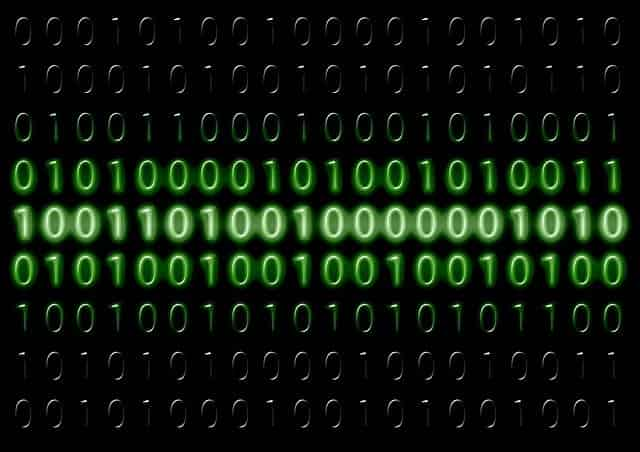

Have you ever encountered mysterious characters on websites, emails or even messages? Mysterious characters that look like this - üñæ , sometimes a question mark inside a box or just a simple blank box. Have you ever wondered what they represented? Obviously, they are not intentionally written by the author. I think I can safely say no one wants to write a blank box (except if you are explicitly talking about it).
Well, it turns out the occurrence of this interesting character has everything to do with string encoding! I believe string encoding is a concept everyone using the internet should be familiar with. It’s important in essentially every visual resource online that has characters, from english alphabets to even emojis. Furthermore, I believe string encoding is also a fascinating concept!
In today’s article, I will be introducing how computers read characters and the brief history of how string encoding came to be.
How do Computers read?
Computers have slowly become the most impressive invention that humans have come up with in recent times. Computers these days have a plethora of different functions, and with each passing year they just seem to become more and more mind-blowing. This causes many of us to overlook just how these computers function.
Computers don't have eyes or brains, how do they function?
For example, the simple task of reading and displaying characters may seem extremely basic to you and me, but how exactly do our computers do it? At the end of the day, they are just machines! Computers are just a bunch of mindless electrical components bunched together, yet they seem to have the processing capabilities to outwit any living being. How do they function?
It all comes down to binary. Yes, it’s all simple binary - 1s and 0s. At the end of the day, computers are all about receiving and displaying information. Whether you are playing a video game, watching a movie or reading an article on Coding Cucumbers, computers generally use the same concept. Computers can’t read characters or pictures, they rely on binary!

1s and 0s, that's all Binary is!
Binary is all about bits. A bit is something that can only represent 2 values. The lightbulb is either on or off, the door is either open or closed. For programmers, bits are basically Boolean values, whereby something is either True or False. That’s it! That’s all our computers can comprehend, whether something is True or False, or in Binary terms, a 1 and a 0!
This still begs the question, how do computers know what’s a 1 and what’s a 0? Well… They don’t. The one sole thing computers can comprehend is electrical current. Is there an electrical current running, or is there no electrical current running? Engineers in the past decided to assign these “states” to 1s and 0s, whereby a 1 value would mean there is electrical current flowing, and a 0 value would mean the opposite.
That’s great! Our computers can comprehend a grand total of 2 values now! If that’s the end to our great, big story of the advancement of computers, we would end up with a marvellous machine that can display one of two states… Imagine a piece of paper that has a message on each side. However, it doesn’t stop there! Now that we have bits, we can simply chain them together to represent more values!
For example, if I have 2 bits together, I can assign a value for when both are 1s, both are 0s, the first bit is 1 and the second is 0, or vice versa! Now we can represent 4 values! If we have 3 bits, we can represent 8 values, 4 bits and we can represent 16 values… With increasing bits, we multiply the number of values that we can define!
A bit can either be a Lightbulb that's lit or one that's unlit!
Computers use this exact logic to comprehend just about everything! Think of your computer’s memory as a million bits back to back, with each combination of bits representing a distinct value! That’s just how Binary, and therefore Computers work! This then brings us to String Encoding.
What is String Encoding?
Now that we understand the concept of Binary and how computers comprehend things, let’s get to the specifics. How now do we convert our distinct binary patterns into distinct characters? The raw Binary code of 0s and 1s provide no value to us as humans. Just like how engineers of the past assigned having current as 1 and having no current as 0, our computers must now assign each and every binary code as something useful.
Computers must have a list of binary codes to know that when it meets a specific line of 0s and 1s, it knows exactly which character that line represents. In other words, they need a “translator”, or a way to “decode” the Binary patterns.
This is where the story of String Encoding begins. String encodings are basically translations, a list of Binary patterns and what character they represent. Computers use these String Encodings to convert the Binary code patterns that computers understand, to characters and visual representations that humans understand. All that, from electric currents to bits, from Binary to String Encoding, is the answer to how computers work!
Olden day computers use just about the same logic as the computers of today.
Computers use String Encoding to do many things. Every character displayed by your computer uses String Encoding. Every character, number, even emojis! This means that the String Encoding system has to have a large enough variety of Binary patterns to cover all kinds of characters. The Binary pattern for a character like “A”, must be completely different from a character like “B”.
This may seem manageable when it comes to english alphabets, whereby there are only 26 distinct characters (double that if counting capital letters). Problems begin to arise when we talk about different languages. Imagine Asian languages like chinese, where there seems to be an almost infinite number of different characters (which is why I’m bad at Chinese). Other european languages like German and French also have characters that are unique to their own languages!
Eventually, different String Encoding schemes started to pop up from all corners of the earth, which posed a different problem entirely. If everyone was using different String Encoding, it defeats the purpose of String Encoding entirely, doesn’t it? With everyone having a different Binary pattern representing different characters, our Binary Code system didn’t really work anymore. A message on one computer would appear entirely differently on another, which begs the question, which String Encoding scheme should the world follow?
Advancement of String Encoding
The world went through a series of different String Encodings. There were many different String Encodings that served different purposes, and all worked well in their own right. The common problem all String Encodings had to tackle was the problem of memory.
At the end of the day, a computer could only hold a set number of bits. The String Encodings could only go as far as the memory capabilities of computers at that current time. For example, back in the 1970s and 1980s, one common String Encoding used was ASCII, which could only account for 7 bits (128 distinct characters).
ASCII was one of the most extensively-used string encodings in the past.
As time flew by and the memory capabilities of computers began to improve, more and more extensive String Encodings began appearing. This was good because it meant that computers could recognise and display a larger range of characters.
Today, the most commonly used String Encoding is Unicode, specifically UTF-8. Unicode uses a much more complicated way of storing unique codes for each character, including emojis! This means that it is more memory efficient as a String Encoding system.
How UTF-8 does it is by ensuring each character only takes up the amount of bits that it needs. Due to this flexibility, UTF-8 allows characters to be stored with much lesser memory overall! For example, emojis will take up much more bits than simple characters.
Another great thing is that the first 128 UTF-8 codes are identical to that of ASCII. This means that UTF-8 will have no problem deciphering characters written in ASCII too!
Why String Encoding is important
Finally, let’s get to why you should care. Every character you see on a computer, symbols, alphabets, numbers or emojis, are made up of a series of Binary code. Without knowing the String Encoding of your characters, you are left with just a series of unknown 1s and 0s, you won’t get any of the intended characters you want!
Liked I talked about in the introduction to this article, these boxes üñæ means that your current computer is trying to decipher the character with the wrong String Encoding. Your computer does not know what this series of Binary code means, thus it cannot show you any character!
Lucky for us, most of the world today has settled on using UTF-8 as the standard String Encoding, which means it will be rare to meet a situation where your computer is unable to interpret characters. However, there are still many situations, especially when dealing with people from different parts of the world, where you will meet a clash in String Encodings.
For example, if you are scraping data from a website that uses a unique String Encoding, it is important to let your script know how to interpret the characters, else your data will be mismanaged and completely unreadable.
To check the String Encoding of any website, it is common for developers to include the string encoding in the head tag of the website. That’s one simple way of determining the string encoding of a webpage.
Conclusion
Although String Encoding may not be as important a concept to learn as before UTF-8 became the standard, I really believe it’s still an important thing to take note of, especially if you are a software developer. It also introduces the basics of Computer Science and how computers function, which is something most people are interested in nowadays.
Personally, I was introduced to the world of String Encoding from an article written by David C. Zentgraf, link here. It’s a great article about the history of String Encoding and talks about basically everything someone should know about String Encoding.
I hope you guys have enjoyed today’s article about Computers and String Encoding. If you are interested, please do research more about the different types of String Encodings and how they differ from one another! If you have enjoyed the article, please subscribe to our Email Newsletter to keep up to date with all our new articles! Stay cool, cucumbers!